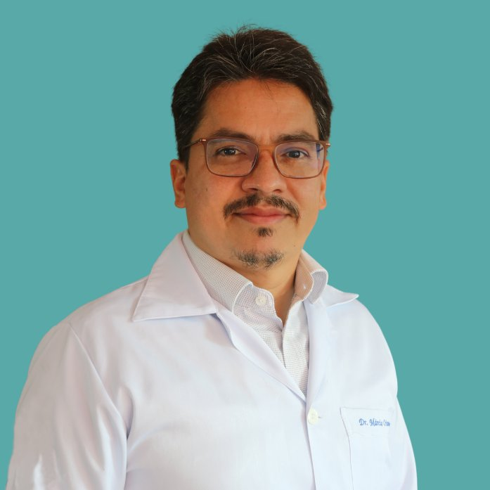
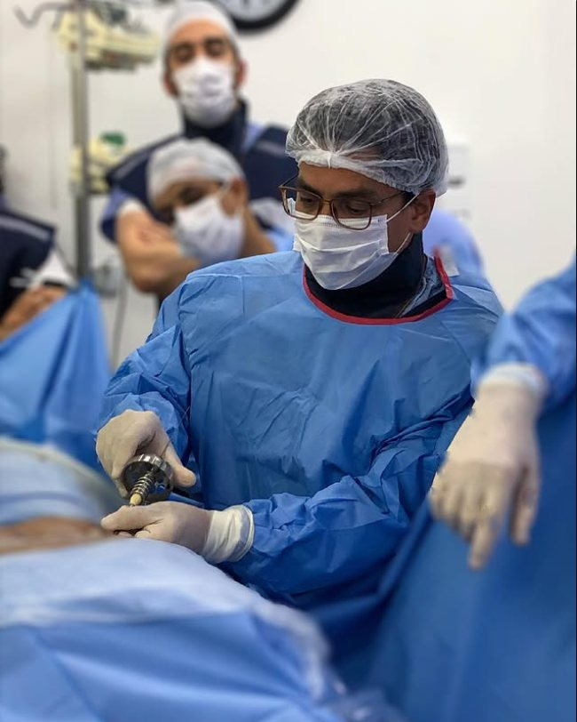

2026
Curso
UBE Spine Weekend
Curso de endoscopia biportal da coluna, com cirurgias ao vivo e simuladores.
Goiânia (GO)
Dr. Márcio CrisantoMédico · Ortopedia e TraumatologiaCRM-PE 12253 · RQE 9294
Dor nas costas, no pescoço ou que desce para as pernas tem causa, e tem caminho. O Dr. Márcio Crisanto atende há mais de 20 anos em Recife (Boa Viagem e Paissandu), Olinda e Cabo de Santo Agostinho, sempre explicando cada etapa com clareza.

Médico · Ortopedia e Traumatologia CRM-PE 12253 · RQE 9294
O que tratamos
Se você se reconhece em algum desses sintomas, uma avaliação com ortopedista de coluna ajuda a entender a causa e o que pode ser feito.
Dor que irradia para o braço ou a perna, formigamento ou perda de força.
Dor na parte baixa das costas, que aparece de repente ou se arrasta há meses.
Dor e rigidez no pescoço, às vezes com dor de cabeça ou nos ombros.
Dor em choque ou queimação que desce pela parte de trás da perna.
Cansaço e dor nas pernas ao caminhar, que aliviam quando você senta.
Desvio lateral da coluna, em crianças, adolescentes e adultos.
Desgaste das articulações da coluna, com dor e perda de mobilidade.
Após quedas, acidentes ou por osteoporose, com dor súbita nas costas.
Como é o cuidado
Ter dor na coluna não significa precisar de cirurgia. O tratamento começa pelo diagnóstico e segue no ritmo do seu caso.
Conversa sobre a história da dor, rotina e limitações, seguida do exame da coluna e dos nervos.
Quando necessário, exames de imagem como raio-X, tomografia ou ressonância, sempre explicados junto com você.
Medicação, fisioterapia, orientação postural e atividade física. Na maior parte dos casos, o tratamento começa por aqui.
Considerada quando o tratamento conservador não é suficiente ou há sinais de alerta. Benefícios e riscos são explicados antes da decisão.
Sobre o médico
Médico · Ortopedia e Traumatologia · CRM-PE 12253 · RQE 9294
Formado em Medicina pela Universidade de Pernambuco (UPE), fez residência em Ortopedia e Traumatologia e especialização em cirurgia de coluna no Hospital das Clínicas da UFPE.
Há mais de 20 anos dedica a carreira à ortopedia, com atuação voltada para a coluna vertebral. Atende pacientes de toda a Região Metropolitana em Boa Viagem, no Paissandu, em Olinda e no Cabo de Santo Agostinho.
Acompanha de perto a evolução da área, participando de congressos nacionais e internacionais de ortopedia e de cirurgia da coluna, incluindo técnicas minimamente invasivas e endoscópicas da coluna.
“Há 20 anos ajudando pessoas por meio da ortopedia. Marido, pai e avô.”

Atualização contínua
A medicina da coluna evolui rápido. Estar nesses encontros é parte do cuidado com quem é atendido no consultório.
2026
Curso
Curso de endoscopia biportal da coluna, com cirurgias ao vivo e simuladores.
Goiânia (GO)
2025
Nacional
Congresso da Sociedade Brasileira de Ortopedia e Traumatologia.
Salvador (BA)
2025
Internacional
Congresso mundial de cirurgia endoscópica e minimamente invasiva da coluna (WFSEC25).
Bariloche, Argentina
2024
Nacional
Principal encontro anual da ortopedia brasileira, promovido pela SBOT.
Rio de Janeiro (RJ)
Dúvidas frequentes
Os planos aceitos variam de acordo com a unidade. Na seção de agendamento você vê a lista de cada local e pode informar o seu plano na mensagem, para a recepção confirmar a cobertura.
Não. A maioria dos casos melhora com tratamento conservador, como medicação, fisioterapia e mudanças na rotina. A cirurgia é considerada em situações específicas, e a decisão é sempre conversada com o paciente.
Documento com foto, carteirinha do plano (se for por convênio), exames de imagem anteriores com os laudos e a lista dos remédios que você usa.
Para consulta particular, não. Alguns planos pedem guia ou encaminhamento; a recepção da unidade informa na hora do agendamento.
Na que for mais prática para você e que aceite o seu plano. São duas em Boa Viagem, uma no Paissandu, uma em Olinda e duas no Cabo de Santo Agostinho. Use o filtro por região para ver só as mais próximas.
As consultas são agendadas. Se houver perda de força, alteração no controle da urina ou das fezes, ou dor forte depois de queda ou acidente, procure um pronto-atendimento.
Agendamento
Escolha o local em Boa Viagem, no Paissandu, em Olinda ou no Cabo, diga como será o atendimento e envie a mensagem. A recepção responde para confirmar dia e horário.
Zona Sul · Boa Viagem
Boa Viagem Medical Center (Hospital Alfa)
Av. Visconde de Jequitinhonha, 1144, 4º andar, salas 402 a 404
Boa Viagem, Recife - PE, 51030-020
(81) 2129-1402 · (81) 3076-9245
Agenda pelo WhatsApp ou por telefone
Particular e convênios
Zona Sul · Boa Viagem
Av. Conselheiro Aguiar, 1733
Boa Viagem
Recife - PE, 51111-011
Agenda somente por telefone
Particular e convênios
Olinda · Bairro Novo
Clínica de Fraturas, Ortopedia e Reabilitação de Pernambuco
Praça Doze de Março, 36, sala 01
Bairro Novo, Olinda - PE, 53030-110
Agenda pelo WhatsApp ou por telefone
Particular e convênios
Zona Norte · Paissandu
Rede D'Or · Unidade Paissandu
Rua Pacífico dos Santos, 103
Paissandu, Recife - PE, 52010-030
Central Rede D'Or (81) 3003-3230
Agenda online pela Rede D'Or ou pela central
Convênios
Cabo de Santo Agostinho · Centro
Av. Presidente Getúlio Vargas, 974
Centro, Cabo de Santo Agostinho - PE, 54505-560
Agenda pelo WhatsApp ou por telefone
Particular e convênios
Cabo de Santo Agostinho
Av. Presidente Getúlio Vargas, 864
Cabo de Santo Agostinho - PE
Agenda somente por telefone
Convênios
A cobertura pode mudar conforme o plano e a unidade. Confirme a sua ao agendar.
Local escolhido:
Escolha particular ou convênio (e o seu plano) para continuar.